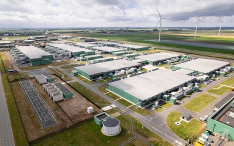

Il Digitale
Durante gli ultimi anni abbiamo assistito ad un forte e repentino aumento dell'utilizzo delle tecnologie e del digitale.
Non possiamo più vivere senza ma ciò non deve diventare una scusa per non utilizzarla in maniera consapevole.
Purtroppo la nostra attività online è largamente inquinante!
I data center per mantenere archiviati i tuoi dati producono CO₂ 24 ore su 24 che finisce nell'atmosfera e peggiora il surriscaldamento globale. Inoltre richiedono ingenti quantità di acqua per essere raffreddati.
I data center producono circa il 3,7% delle emissioni globali di CO₂ per mantenere sempre accessibili i nostri dati e sono destinati a produrre circa 2 miliardi e mezzo di tonnellate di CO₂ entro il 2030.

Come usi quei data center? Semplice, mandando e ricevendo email, ascoltando musica in streaming, guardando video e naviganto su Internet. Ogni tua azione online ha un costo ambientale.
Anche lo smaltimento dei rifiuti elettrici ed elettronici, i cosiddetti RAEE è estremamente importante.
Scopri di più leggendo questo Paper di Adele Bianco, ricercatrice.
Ecco 10 semplici consigli per diventare un DigiGreen
- 📩 Elimina le email vecchie o inutili
- 📋 Disiscriviti dalle Newsletters
- 📂 Non inviare file troppo grandi per email. Salvali su cloud e invia semplicemente il link
- 🎧 Scarica la musica che ascolti invece di ascoltarla in streaming
- 🎞️ Non ascoltre la musica tramite video di YouTube, ma da applicazioni solo audio
- ♻️ Porta i tuoi rifiuti tecnologici in un isola ecologica o al più vicino negozio di grandi dimensioni per smaltirli correttamente
- 🖥️ Cerca di far durare i tuoi dispositivi elettronici per il maggior tempo possibile
- 🌐 Quando non necessiti di un collegamento molto veloce riduci la tua connessione da 5G a 4G
- 🔌 Se non stai usando il tuo dispositivo elettronico spegnilo, serve a lui e anche all'ambiente
- ⚡ Informati sul tuo provider per sapere se utilizza metodi green di archiviazione dei dati